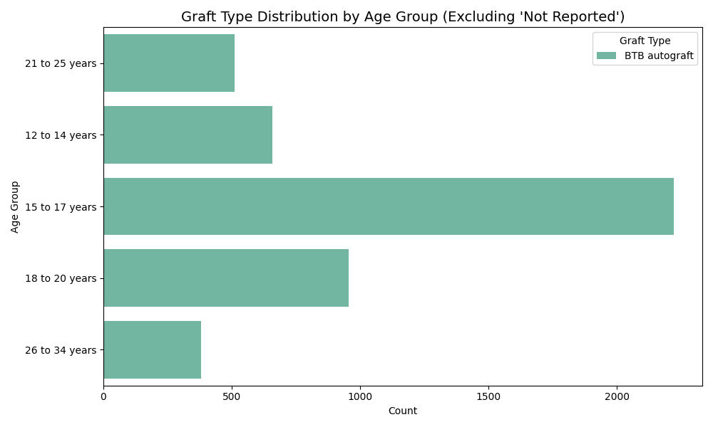
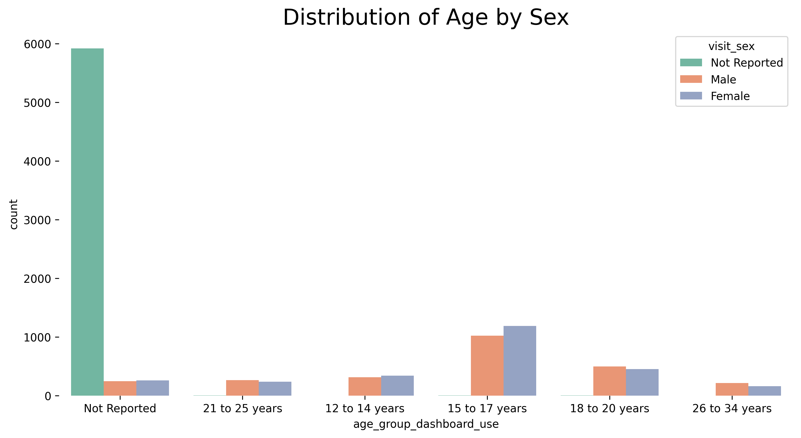
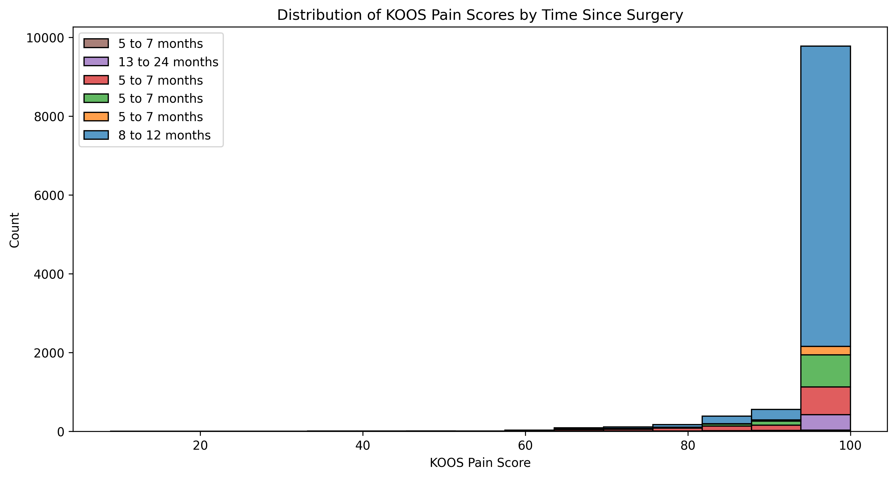
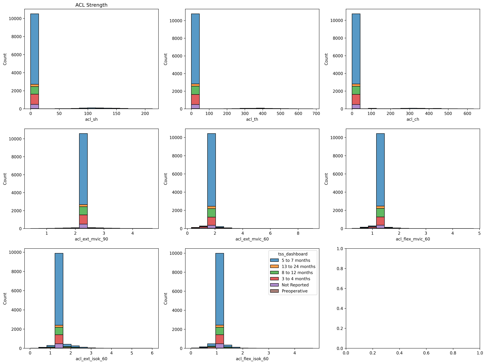

3 Exploratory Data Analysis
3.1 Plan outlook:
Our previous plan is to create a dynamic dashboard, but given that dynamic dashboards are not allowed in this assignment, we chose to create graphs that identifies a hypothetical patient (randomly selected patient from the dataset) in our hypothetical clinic, and is currently being treated by a hypothetical doctor in the midst of a recovery stage. The purpose of the visualizations would then to be to compare the current patient’s recovery status to the rest of the cohort’s averages or median values (at the current stage of recovery, 5 - 7 months, 8 - 12 months), by doing so, doctors could be informed as to how well the patient is recovering, and patients themselves could also get a grasp at whether they are on track when compared to a cohort wide regular recovery trajectory.
3.2 Example Scenario:
If a doctor conducted a self-reported evaluation survey with their patient (i.e. KOOS), or any other form of strength evaluation based off a certain testing methodology. The doctor could then compare that particular patient’s survey results or evaluation score with the average/median values of the rest of the cohort’s performances (or regular recovery trends of all patients recorded in the database) to determine whether the patient is on track, falling behind, or suffering from unique conditions that does not fit normal observed recovery outcomes.
The patient could equally conduct such evaluative reflection by themselves.
3.3 Exploratory Data Analysis
Visualizing the distribution of graft types by age groups: are graft types a significant factor / choice among a certain age group?
# distribtion of grafttype by age groups
plt.figure(figsize=(10, 6))
filtered_df = df[
(df['age_group_dashboard_use'] != 'Not Reported') &
(df['graft_dashboard2'].notnull()) &
(df['graft_dashboard2'] != 'Not Reported')
]
sns.countplot(data=filtered_df, y='age_group_dashboard_use', hue='graft_dashboard2', palette='Set2')
plt.title("Graft Type Distribution by Age Group (Excluding 'Not Reported')", fontsize=14)
plt.xlabel("Count")
plt.ylabel("Age Group")
plt.legend(title='Graft Type', bbox_to_anchor=(1., 1))
plt.tight_layout()
plt.savefig('graft_type_isolated.png', dpi=300, bbox_inches='tight', facecolor='white')
plt.show()
Visualizing the distribution of age groups by sex category: this graph tells us that that the age group of 15-17 years old showcases a little disparity while all other age groups contain a similar number of male and female patients. An initial conclusion could be made that girls are likely to be injured from the age of 15 to 17 years old.
# distrubtion of grafttype by sex
plt.figure(figsize=(12, 6))
sns.countplot(data=df, x='age_group_dashboard_use', hue='visit_sex', palette='Set2')
plt.title("Distribution of Age by Sex", fontsize= 20)
ax= plt.gca()
ax.spines['top'].set_visible(False)
ax.spines['right'].set_visible(False)
ax.spines['left'].set_visible(False)
ax.spines['bottom'].set_visible(False)
plt.savefig('age_sex.png', dpi=300, bbox_inches='tight', facecolor='white')
plt.show()
Along the way, we discovered that tss stands for ‘time since surgery’ a relatively useful variable for us since we are aiming to visualize the change in recovery rates or other variables over time.
print(df['tss_dashboard'].unique()) # time since surgery[‘5 to 7 months’ ‘13 to 24 months’ ‘8 to 12 months’ ‘3 to 4 months’ ‘Not Reported’ ‘Preoperative’]
Visualizing how the self-reported pain evaluation score is distributed by the variable of time since surgery. If the KOOS pain score is distributed from 0 to 100, with 100 representing maximum ‘pain level’, we could conclude that most people felt maximum painfulness at the 8th to 12th month since surgery. This proves that that tss, combined with any other recovery metrics, could deduce valuable and interesting insights for not just us, but also our ‘stakeholders’ - the doctors/physicians when observing the recovery of their patients.
plt.figure(figsize=(12, 6))
sns.histplot(data=df, x='koos_pain', hue='tss_dashboard', multiple='stack') # or 'dodge'
plt.title("Distribution of KOOS Pain Scores by Time Since Surgery")
plt.xlabel("KOOS Pain Score")
plt.ylabel("Count")
plt.legend(df['tss_dashboard'])
plt.savefig('koos_pain_score_bytss.png', dpi=300, bbox_inches='tight', facecolor='white')
plt.show()
With this in mind, we’ve decided to visualize tss against all of the other recovery metric variables (whether it is pain, LSI, strength score, etc) to see how patients recover over time. We adopted a small multiples strategy so that all of the visualizations can be created at once
# visualizing the distirbution of strength testing, tss ( multiple)
fig,axs = plt.subplots(3,3, figsize=(20, 15))
sns.histplot(data=df, x='acl_sh', hue= 'tss_dashboard', multiple='stack', ax=axs[0,0], legend=False)
axs[0,0].set_title("ACL Strength")
sns.histplot(data=df, x='acl_th', hue= 'tss_dashboard', multiple='stack', ax=axs[0,1], legend=False)
sns.histplot(data=df, x='acl_ch', hue= 'tss_dashboard', multiple='stack', ax=axs[0,2], legend=False)
sns.histplot(data=df, x='acl_ext_mvic_90', hue= 'tss_dashboard', multiple='stack', ax=axs[1,0], legend=False)
sns.histplot(data=df, x='acl_ext_mvic_60', hue= 'tss_dashboard', multiple='stack', ax=axs[1,1], legend=False)
sns.histplot(data=df, x='acl_flex_mvic_60', hue= 'tss_dashboard', multiple='stack', ax=axs[1,2], legend=False)
sns.histplot(data=df, x='acl_ext_isok_60', hue= 'tss_dashboard', multiple='stack', ax=axs[2,0], legend=False)
sns.histplot(data=df, x='acl_flex_isok_60', hue= 'tss_dashboard', multiple='stack', ax=axs[2,1])
plt.savefig('recovery_metrics_by_tss.png', dpi=300, bbox_inches='tight', facecolor='white')
plt.show()
From the small multiples above, we could see how the recovery metrics are distributed by comparing the different ‘types’ of recovery metrics in the same ‘category’. I.e. observing how acl knee extension value differentiates in the different degrees of which the patient can extend their knee to.